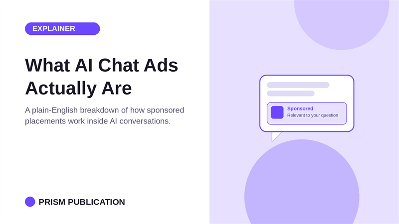

ad-tech
What AI Chat Ads Actually Are

What is the direct answer?
Every AI chat platform is quietly rolling out ads. Here is what a chat ad actually is, how it differs from a banner, and why it matters if you do not run OpenAI, Google, or Amazon.
What are the key takeaways?
- An AI chat ad is a sponsored message, link, or product card that shows up inside a conversation, placed because of what the user just asked, not because of a cookie or a behavioral profile built over months.
- Banner and display ads guess.
- Three moves happened close together and they are worth knowing about even if you are not competing with any of these three directly.
- Reported pricing on OpenAI's own ChatGPT ads runs $25 to $60 per thousand impressions, or $3 to $5 per click, with a much wider range across the rest of the AI chat ad market.
Every few weeks another headline says ChatGPT, Gemini, or some chatbot startup is "adding ads." Most of those headlines do not explain what that actually means. If you run an AI app, a chatbot, or any conversational product, it is worth understanding this clearly, because it is the revenue model that is about to sit next to, or replace, your subscription tier.
What is an AI chat ad?
An AI chat ad is a sponsored message, link, or product card that shows up inside a conversation, placed because of what the user just asked, not because of a cookie or a behavioral profile built over months. The user says "I need running shoes for flat feet" and a relevant product or partner shows up in or near the response. No pop-up, no banner competing for attention, no page reload.
This is different enough from web advertising that it deserves its own explanation.
How is it different from a banner ad?
Banner and display ads guess. They look at browsing history, demographic buckets, and third-party data to estimate what you might want, then show you something and hope. Click-through rates on that model have been falling for over a decade.
Chat ads do not have to guess. The user just typed their intent in plain language. "Best noise-canceling headphones under $200" is a stronger purchase signal than months of ad-tech inference. The ad system reads the message, matches it to a relevant product or partner, and surfaces that match inside or alongside the response.
That is the whole shift: from predicting intent to reading it.
Who is actually building this?
Three moves happened close together and they are worth knowing about even if you are not competing with any of these three directly.
OpenAI has started testing ads for free and low-cost ChatGPT users in the US. Google has told advertisers that ads are coming to Gemini. Amazon launched Alexa+ Agentic Ads, where someone can ask a question, get an answer, and check out without leaving the conversation.
Those three are the platforms with the most users and the most direct line to advertiser budgets. But they are also closed systems. If you run your own chatbot, app, or AI tool outside of ChatGPT, Gemini, or Alexa, none of that ad inventory or revenue reaches you. You are watching the model get proven on someone else's platform.
Why does this matter if you are not OpenAI?
Most independent AI apps run on subscriptions, and subscription conversion in consumer AI products typically lands between 2% and 5%. That means 95 to 98 out of every 100 users are costing you inference dollars and generating zero revenue. Ads are how you monetize the users who were never going to pay $10 a month, without putting a paywall in front of the product.
The mechanics are simple to describe: a marketplace connects app publishers, the supply, meaning your chat surface, with advertisers, the demand, meaning brands who want to reach people mid-conversation. The publisher gets paid per impression or per click. The advertiser gets a placement at the moment someone is actually asking about their category. Nobody sees a banner. Nobody gets interrupted.
What does a good chat ad placement look like?
A placement that works reads like part of the conversation, not an interruption bolted onto it. A few things separate a placement that gets ignored from one that gets clicked.
It matches the actual topic of the message, not a broad category. It shows up once, not on every turn of the conversation. It is labeled clearly as sponsored, because trust is the whole reason someone is using a chat product instead of a search engine full of ads already.
Get those right and the ad reads less like an ad and more like a useful answer to a question the user was already asking.
What does it actually cost to advertise this way?
OpenAI's own program, which launched in February 2026, gives the clearest public numbers so far. Official bid guidance runs up to $60 per thousand impressions, though real-world CPMs have reportedly settled closer to $25. Cost-per-click bidding arrived in April 2026, with a recommended starting bid of $3 to $5 a click, higher for software and finance advertisers, lower for ecommerce.
Across the wider AI chat ad market, reported CPMs run lower still, from $0.50 up to $5 for plain text placements, with video or rich media closer to $15 to $25. Click-through rates on these placements are reported under 1%, well below the roughly 6% typical of Google search ads, but reported conversion rates on the clicks that do happen run higher than search or display, since the person already said what they wanted before the ad ever showed up.
What is the takeaway?
AI chat ads are not a future trend. OpenAI, Google, and Amazon already shipped them. The open question is whether that revenue model stays locked inside three platforms, or whether independent publishers get access to the same demand. For anyone running a chatbot, an AI app, or any conversational product outside of the big three, that is the gap worth paying attention to right now.
Related: the live chat on Prism Publication.
Frequently asked questions
What is an AI chat ad?
An AI chat ad is a sponsored message, link, or product card that shows up inside a conversation, placed because of what the user just asked, not because of a cookie or a behavioral profile built over months. The user says "I need running shoes for flat feet" and a relevant product or partner shows up in or near the response. No pop-up, no banner competing for attention, no page reload.
How is it different from a banner ad?
Banner and display ads guess. They look at browsing history, demographic buckets, and third-party data to estimate what you might want, then show you something and hope. Click-through rates on that model have been falling for over a decade.
Who is actually building this?
Three moves happened close together and they are worth knowing about even if you are not competing with any of these three directly.
What does it cost to run an ad in an AI chat?
Reported pricing varies a lot by platform. OpenAI's own ChatGPT ads run $25 to $60 per thousand impressions, or $3 to $5 per click depending on the industry. Across the wider market, plain text native placements are commonly reported from $0.50 to $5 per thousand impressions.
See it work before you pay ChatGPT-scale prices
Submit a campaign free, then test it yourself in a real chat before spending anything. No minimum daily budget, no auction, no CPM at all until you decide it is worth paying for clicks.